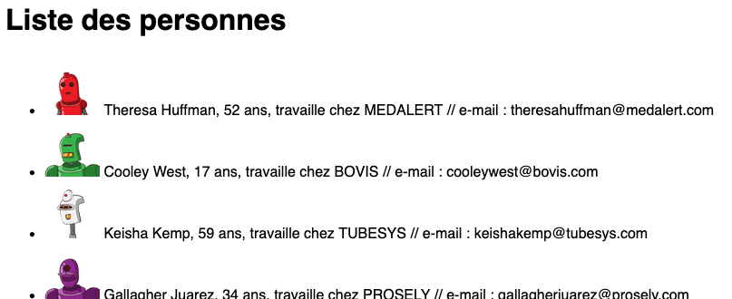
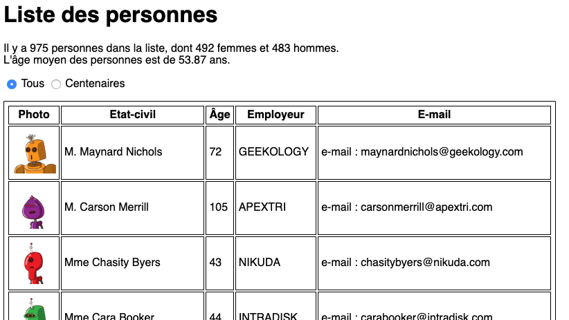
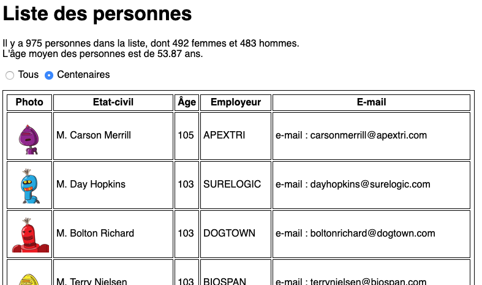
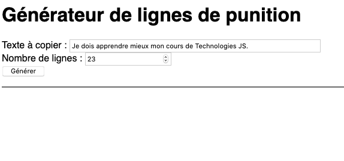
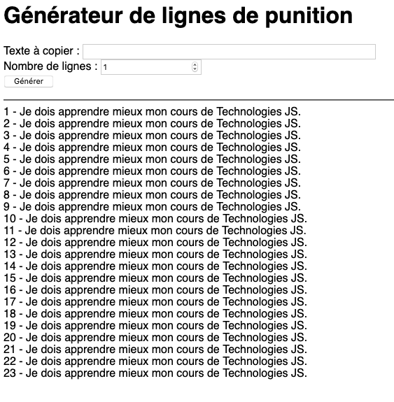

DUT Métiers du Multimédia et de l'Internet
Évaluation M4201
Durée : 1h15 - Tout document autorisé. Aucune communication avec les autres étudiants.
- Le sujet comporte trois parties indépendantes.
- Le non-respect des consignes données dans l'énoncé enlèvera des points sur la note finale.
- Télécharger le fichier "jerome_landre.zip", décompressez-le et changez le nom du dossier "jerome_landre" avec votre prénom et votre nom (en minuscules, sans caractères spéciaux).
- Durant toute l'évaluation, vous devrez modifier les fichiers dans votre dossier.
1) Personnes (liste simple) :
- On veut afficher des informations sur des personnes contenues dans un tableau JSON.
- Complétez le code "exo1.html" pour afficher le résultat comme montré partiellement ci-dessous avec une boucle "v-for".

2) Personnes (fonctionnalités avancées) :
- On veut afficher des informations sur des personnes contenues dans un tableau JSON.
- Il faut calculer le nombre total de personnes, le nombre de femmes et le nombre d'hommes dans la liste.
- Il faut calculer l'âge moyen des personnes.
- Il faut afficher toutes les personnes ou seulement les centenaires (âge>=100) grâce au bouton radio fourni.
- Complétez le code "exo2.html" pour afficher le résultat comme montré partiellement ci-dessous avec une boucle "v-for".


3) Générateur de punition :
- On veut créer un générateur de punition pour ne plus avoir à écrire les lignes demandées par l'enseignant.
- L'idée consiste à remplir un tableau avec une boucle à l'appui sur le bouton "générer".
- Ce tableau est ensuite affiché simplement avec une boucle "v-for".
- On souhaite, en plus, afficher le numéro de ligne devant la ligne de punition.
- Lorsque la punition est générée, le texte de la ligne doit se vider et le nombre de lignes doit revenir à 1.
- Complétez le code "exo3.html" pour afficher le résultat comme montré partiellement ci-dessous avec une boucle "v-for".


À LA FIN DE L'ÉVALUATION
- Surveillez l'heure de fin de l'épreuve !
- Compresser TOUT votre dossier "prenom_nom" dans un fichier "prenom_nom.zip" en remplaçant prenom_nom par votre nom et votre prénom (en minuscules sans caractères spéciaux).
- Déposer votre fichier sur Moodle dans la matière M4201.
- Demander à l'enseignant s'il a reçu votre fichier AVANT de sortir de la salle.